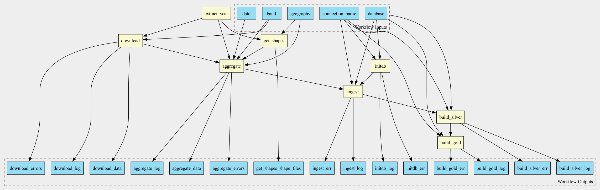

Tutorial: Documenting a workflow
This tutorial walks through the process of documenting the workflow created in Part 1, Building the pipeline.
Workflow files
In the previous tutorial we built a workflow represented by two YAML files:
Workflow topology expressed in CWL: example1.cwl
Description of the transformations performed by the workflow, expressed in Dorieh Data Modeling DSL: example1_model.yml
We will now create online interactive documentation for the
workflow. Dorieh includes a few helper
documentation utilities that will help us with
this process.
Generating skeleton documentation
To generate a skeleton, we will use the cwl2md utility that turns a CWL workflow into Markdown documentation with a DAG diagram and step descriptions.
From the tutorial directory, run:
cwl2md -i example1.cwl -v -o docs/
The utility produces three files:
example1.md: The principal documentation file, containing:
A visual representation of the workflow DAG (see Figure 1)
Description of all workflow inputs and outputs.
Description of all workflow steps. These step-by-step details are accompanied by links to individual tool documentation. For built-in Dorieh tools, links point to their online documentation; for custom tools, links may point to referenced CWL tools, Python module docs, or relevant shell commands.
A reference to the workflow’s source code.
The image file example1.png, which is embedded in the example1.md file.
example1cwl_src.md: a Markdown file that wraps the workflow source code with syntax highlighting.

By default, the generated documentation includes topology, parameter types, and structural information. However, for effective collaboration and regulatory conformance, more thorough documentation is often needed.
Enhancing workflow documentation
Adding Workflow Title
Add a top‑level title to example1.cwl using a triple-hash (###) comment header. This follows YAML conventions and provides a clear overview in the documentation output.
#!/usr/bin/env cwl-runner
### Sample Dorieh CWL workflow illustrating data acquisition, preparation, ingestion and transformation, using climate data
cwlVersion: v1.2
class: Workflow
#...
Documenting workflow elements with doc key
It is recommended to add a doc key to all workflow elements,
including inputs, outputs, steps. This provides a clear
description of the purpose of each element and is supported by
Dorieh utilities, resulting in more comprehensive and
self-explanatory documentation.
For example, we can add a doc key to the band input:
band:
type: string
default: tmmx
doc: |
University of Idaho Gridded Surface Meteorological Dataset
[bands](https://developers.google.com/earth-engine/datasets/catalog/IDAHO_EPSCOR_GRIDMET#bands)
Similarly, we can document get_shapes step:
get_shapes:
run: https://raw.githubusercontent.com/ForomePlatform/dorieh/main/src/cwl/get_shapes.cwl
doc: |
This step downloads Shape files from a given collection (TIGER/Line or GENZ)
and a geography (ZCTA or Counties) from the US Census website,
for a given year or for the closest one.
in:
year:
valueFrom: $(inputs.date.split('-')[0])
geo: geography
date: date
After adding or modifying doc entries, simply re-run:
cwl2md -i example1.cwl -v -o docs/
All documentation elements you include in your CWL workflow are incorporated into the auto-generated Markdown. This approach ensures both standardized and custom documentation are available together, supporting both technical reference and compliance requirements.
A fully documented workflow is available in the GitHub example.
Note
The fully documented reference above is deliberately the simpler
no-database climate workflow (see
Example: aggregating a climate variable).
It uses the same tools and the same documentation keys (the ### title
header and the doc keys) as the workflow built in this tutorial, but has
fewer moving parts, so the generated documentation is easier to follow.
The copy of example1.cwl shipped with the documentation
(doc/tutorial/climate/example1.cwl) is intentionally left undocumented:
adding the title header and doc keys to your own copy and re-running
cwl2md is left as an exercise for the reader.
Next steps
Continue with Part 3,
Constructing data dictionaries and lineage graphs,
which generates the data dictionary and lineage diagrams from
example1_model.yml using the docs/ directory created here.